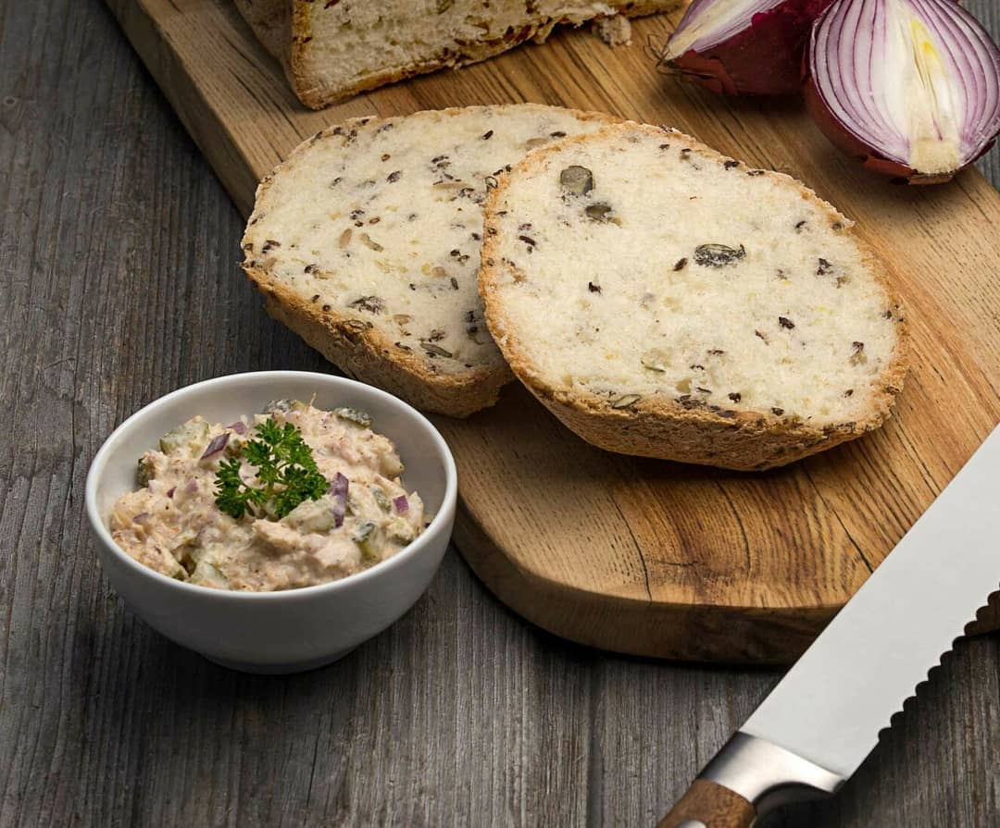

Tuniaková nátierka podľa @eta_sk — Normy Jedál
Tuniaková nátierka 🐟 Ryby by sme mali jesť aspoň raz týždenne, pretože organizmu dodávajú prospešné omega-3 a omega-6 mastné kyseliny. Mäso tuniaka je tiež bohaté na bielkoviny, draslík, fosfor, horčík, selén, vitamíny A, B12 a B6, ktoré posilňujú imunitu. Konzervovaný tuniak nemá typickú rybaciu arómu a jeho pevné mäso sa výborne hodí ako základ zdravej a chutnej nátierky 👌
Recept nájdete na eta.sk/blog
#natierka #tuniak #tuniakovanatierka #ryby #recepty #rychlerecepty #eta_sk #etablog #etatujedoma